Возведение двучлена в степень
Двучлен — это многочлен, состоящий из двух членов. В прошлых уроках мы возводили двучлен во вторую и третью степень, тем самым получили формулы сокращенного умножения:
(a + b)2 = a2 + 2ab + b2
(a + b)3 = a3 + 3a2b + 3ab2 + b3
Но двучлен можно возводить не только во вторую и третью степень, но и в четвёртую, пятую или более высокую степень.
К примеру, возведём двучлен a + b в четвертую степень:
(a + b)4
Представим это выражение в виде произведения двучлена a + b и куба этого же двучлена
(a + b)(a + b)3
Сомножитель (a + b)3 можно заменить на правую часть формулы куба суммы двух выражений. Тогда получим:
(a + b)(a3 + 3a2b + 3ab2 + b3)
А это обычное перемножение многочленов. Выполним его:
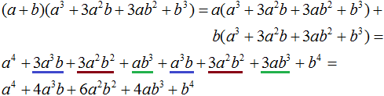
То есть при возведении двучлена a + b в четвертую степень получается многочлен a4 + 4a3b + 6a2b2 + 4ab3 + b4
(a + b)4 = a4 + 4a3b + 6a2b2 + 4ab3 + b4
Возведение двучлена a + b в четвертую степень можно выполнить ещё и так: представить выражение (a + b)4 в виде произведения степеней (a + b)2(a + b)2
(a + b)2(a + b)2
Но выражение (a + b)2 равно a2 + 2ab + b2. Заменим в выражении (a + b)2(a + b)2 квадраты суммы на многочлен a2 + 2ab + b2
(a2 + 2ab + b2)(a2 + 2ab + b2)
А это опять же обычное перемножение многочленов. Выполним его. У нас получится тот же результат, что и раньше:
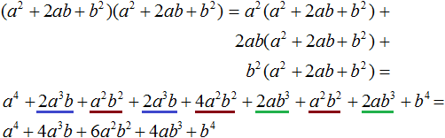
Возведение трёхчлена в степень
Трёхчлен — это многочлен, состоящий из трёх членов. Например, выражение a + b + c является трёхчленом.
Иногда может возникнуть задача возвести трёхчлен в степень. Например, возведём в квадрат трехчлен a + b + c
(a + b + c)2
Два члена внутри скобок можно заключить в скобки. К примеру, заключим сумму a + b в скобки:
((a + b) + c)2
В этом случае сумма a + b будет рассматриваться как один член. Тогда получается, что в квадрат мы возводим не трёхчлен, а двучлен. Сумма a + b будет первым членом, а член c — вторым членом. А как возводить в квадрат двучлен мы уже знаем. Для этого можно воспользоваться формулой квадрата суммы двух выражений:
(a + b)2 = a2 + 2ab + b2
Применим эту формулу к нашему примеру:
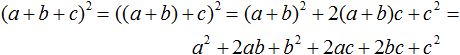
Таким же способом можно возвести в квадрат многочлен, состоящий из четырёх и более членов. Например, возведем в квадрат многочлен a + b + c + d
(a + b + c + d)2
Представим многочлен в виде суммы двух выражений: a + b и c + d. Для этого заключим их в скобки:
((a + b) + (c + d))2
Теперь воспользуемся формулой квадрата суммы двух выражений:
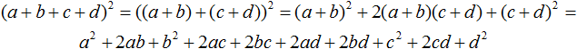
Выделение полного квадрата из квадратного трёхчлена
Ещё одно тождественное преобразование, которое может пригодиться при решении задач это выделение полного квадрата из квадратного трёхчлена.
Квадратным трехчленом называют трёхчлен второй степени. Например, следующие трехчлены являются квадратными:
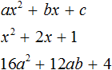
Идея выделения полного квадрата из таких трехчленов заключается в том, чтобы представить исходный квадратный трехчлен в виде выражения (a + b)2 + c, где (a + b)2 полный квадрат, а c — некоторое числовое или буквенное выражение.
Например, выделим полный квадрат из трёхчлена 4x2 + 16x + 19.
Для начала нужно построить выражение вида a2 + 2ab + b2. Строить мы его будем из трехчлена 4x2 + 16x + 19. Для начала определимся какие члены будут играть роли переменных a и b
Роль переменной a будет играть член 2x, поскольку первый член трехчлена 4x2 + 16x + 19, а именно 4x2 получается если 2x возвести в квадрат:
(2x)2 = 4x2
Итак, переменная a равна 2x
a = 2x
Теперь возвращаемся к исходному трёхчлену и сразу обращаем внимание на выражение 16x. Это выражение является удвоенным произведением первого выражения a (в нашем случае это 2x) и второго пока неизвестного нам выражения b. Временно поставим на его место вопросительный знак:
2 × 2x × ? = 16x
Если внимательно посмотреть на выражение 2 × 2x × ? = 16x, то интуитивно станет понятно, что членом b в данной ситуации является число 4, поскольку выражение 2 × 2x равно 4x, и чтобы получить 16x нужно домножить 4x на 4.
2 × 2x × 4 = 16x
Отсюда делаем вывод, что переменная b равна 4
b = 4
Значит, нашим полным квадратом будет выражение (2x)2 + 2 × 2x × 4 + 42
Теперь у нас всё готово для выделения полного квадрата из трёхчлена 4x2 + 16x + 19.
Итак, возвратимся к исходному трехчлену 4x2 + 16x + 19 и попробуем аккуратно внедрить в него полученный нами полный квадрат (2x)2 + 2 × 2x × 4 + 42
4x2 + 16x + 19 =
Вместо 4x2 записываем (2x)2
4x2 + 16x + 19 = (2x)2
Далее вместо 16x записываем удвоенное произведение, а именно 2 × 2x × 4
4x2 + 16x + 19 = (2x)2 + 2 × 2x × 4
Далее прибавляем квадрат второго выражения:
4x2 + 16x + 19 = (2x)2 + 2 × 2x × 4 + 42
А член 19 пока переписываем как есть:
4x2 + 16x + 19 = (2x)2 + 2 × 2x × 4 + 42 + 19
Теперь обратим внимание на то, что полученный нами многочлен (2x)2 + 2 × 2x × 4 + 42 + 19 не тождественен изначальному трёхчлену 4x2 + 16x + 19. Убедиться в этом можно приведя многочлен (2x)2 + 2 × 2x × 4 + 42 + 19 к стандартному виду:
(2x)2 + 2 × 2x × 4 + 42 + 19 = 4x2 + 16x + 42 + 19
Видим, что получается многочлен 4x2 + 16x + 42 + 19, а должен был получиться 4x2 + 16x + 19. Это по причине того, что член 42 был искусственно внедрён в изначальный трёхчлен с целью организовать полный квадрата из трёхчлена 4x2 + 16x + 19.
Чтобы сохранить значение исходного многочлена, нужно после прибавления члена 42 сразу же вычесть его
4x2 + 16x + 19 = (2x)2 + 2 × 2x × 4 + 42 − 42 + 19
Теперь выражение (2x)2 + 2 × 2x × 4 + 42 можно свернуть, то есть записать в виде (a + b)2. В нашем случае получится выражение (2x + 4)2
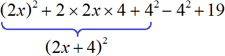
4x2 + 16x + 19 = (2x)2 + 2 × 2x × 4 + 42 − 42 + 19 = (2x + 4)2 − 42 + 19
Оставшиеся члены −42 и 19 можно сложить. −42 это −16, отсюда −16 + 19 = 3
4x2 + 16x + 19 = (2x)2 + 2 × 2x × 4 + 42 − 42 + 19 = (2x + 4)2 − 42 + 19 = (2x + 4)2 + 3
Значит, 4x2 + 16x + 19 = (2x + 4)2 + 3
Пример 2. Выделить полный квадрат из квадратного трёхчлена x2 + 2x + 2
Сначала построим выражение вида a2 +2ab + b2. Роль переменной a в данном случае играет x, поскольку x2 = x2.
Следующий член исходного трёхчлена 2x перепишем в виде удвоенного произведение первого выражения (это у нас x) и второго выражения b (это будет 1).
2 × x × 1 = 2x
Если b = 1, то полным квадратом будет выражение x2 + 2x + 12.
Теперь вернёмся к исходному квадратному трёхчлену и внедрим в него полный квадрата x2 + 2x + 12
x2 + 2x + 2 = x2 + 2x + 12 − 12 + 2 = (x + 1)2 + 1
Как и в прошлом примере член b (в данном примере это 1) после прибавления сразу был вычтен с целью сохранения значения исходного трёхчлена.
Рассмотрим следующее числовое выражение:
9 + 6 + 2
Значение этого выражения равно 17
9 + 6 + 2 = 17
Попробуем выделить в этом числовом выражении полный квадрат. Для этого сначала построим выражение вида a2 + 2ab + b2. Роль переменной a в данном случае играет число 3, поскольку первый член выражения 9 + 6 + 2, а именно 9 можно представить как 32.
Второй член 6 представим в виде удвоенного произведения первого члена 3 и второго 1
2 × 3 × 1 = 6
То есть переменная b будет равна единице. Тогда полным квадратом будет выражение 32 + 2 × 3 × 1 + 12. Внедрим его в исходное выражение:
32 + 6 + 2 = 32 + 2 × 3 × 1 + 12 − 12 + 2
Свернем полный квадрат, а члены −12 и 2 слóжим:
32 + 6 + 2 = 32 + 2 × 3 × 1 + 12 − 12 + 2 = (3 + 1)2 + 1
Получилось выражение (3 + 1)2 + 1, которое по прежнему равно 17
(3 + 1)2+1 = 42 + 1 = 17
Допустим, у нас имеются квадрат и два прямоугольника. Квадрат со стороной 3 см, прямоугольник со сторонами 2 см и 3 см, а также прямоугольник со сторонами 1 см и 2 см
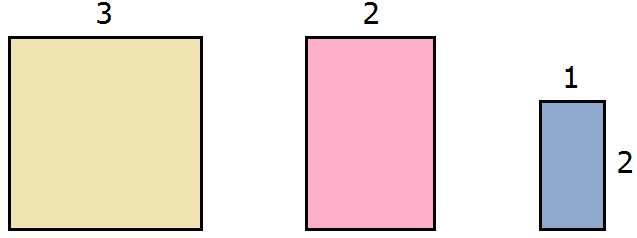
Вычислим площадь каждой фигуры. Площадь квадрата будет составлять 32 = 9 см2, площадь розового прямоугольника — 2 × 3 = 6 см2, площадь сиреневого — 1 × 2 = 2 см2
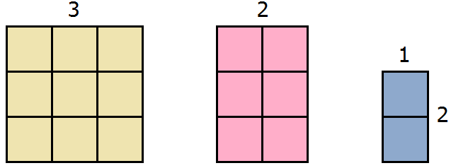
Запишем сумму площадей этих прямоугольников:
9 + 6 + 2
Это выражение можно понимать как объединение квадрата и двух прямоугольников в единую фигуру:
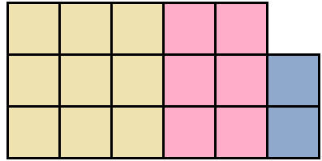
Тогда получается фигура, площадь которой 17 см2. Действительно, в представленной фигуре содержится 17 квадратов со стороной 1 см.
Попробуем из имеющейся фигуры образовать квадрат. Причем максимально большой квадрат. Для этого будем использовать части от розового и сиреневого прямоугольника.
Чтобы образовать максимально большой квадрат из имеющейся фигуры, можно желтый квадрат оставить без изменений, а половину от розового прямоугольника прикрепить к нижней части желтого квадрата:
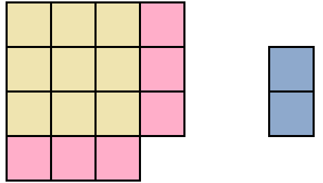
Видим, что до образования полного квадрата не хватает еще одного квадратного сантиметра. Его мы можем взять от сиреневого прямоугольника. Итак, возьмем один квадрат от сиреневого прямоугольника и прикрепим его к образуемому большому квадрату:
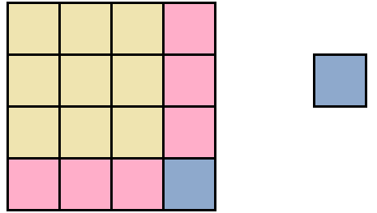
Теперь внимательно посмотрим к чему мы пришли. А именно на желтую часть фигуры и розовую часть, которая по сути увеличила прежний жёлтый квадрат. Не означает ли это то, что была сторона квадрата равная 3 см, и эта сторона была увеличена на 1 см, что привело в итоге к увеличению площади?
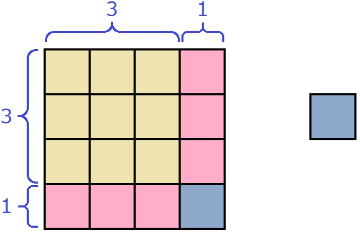
(3 + 1)2
Выражение (3 + 1)2 равно 16, поскольку 3 + 1 = 4, а 42 = 16. Этот же результат можно получить, если воспользоваться формулой квадрата суммы двух выражений:
(3 + 1)2 = 32 + 6 + 1 = 9 + 6 + 1 = 16
Действительно, в образовавшемся квадрате содержится 16 квадратов.
Оставшийся один квадратик от сиреневого прямоугольника можно прикрепить к образовавшемуся большому квадрату. Ведь речь изначально шла о единой фигуре:
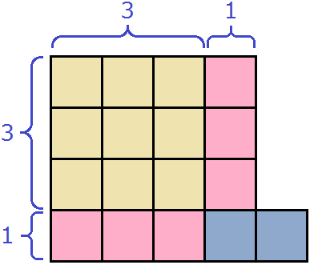
(3 + 1)2 + 1
Прикрепление маленького квадратика к имеющемуся большому квадрату описывается выражением (3 + 1)2 + 1. А это есть выделение полного квадрата из выражения 9 + 6 + 2
9 + 6 + 2 = 32 + 6 + 2 = 32 + 2 × 3 × 1 + 12 − 12 + 2 = (3 + 1)2 + 1
Выражение (3 + 1)2 + 1, как и выражение 9 + 6 + 2 равно 17. Действительно, площадь образовавшейся фигуры равна 17 см2.
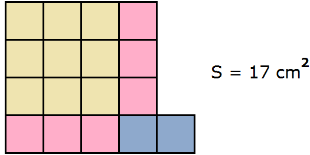
Пример 4. Выполним выделение полного квадрата из квадратного трёхчлена x2 + 6x + 8
x2 + 6x + 8 = x2 + 2 × x × 3 + 32 − 32 + 8 = (x + 3)2 − 1
В некоторых примерах при построении выражения a2 + 2ab + b2 не бывает возможным сразу определить значения переменных a и b.
Например, выполним выделение полного квадрата из квадратного трёхчлена x2 + 3x + 2
Переменной a соответствует x. Второй член 3x нельзя представить в виде удвоенного произведения первого выражения и второго. В этом случае второй член следует умножить на 2, и чтобы значение исходного многочлена не изменилось, сразу же выполнить деление на 2. Выглядеть это будет так:
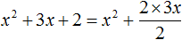
Получившаяся дробь
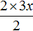
и содержит значения переменных a и b. Наша задача суметь правильно их распознать. Перепишем эту дробь в виде произведения множителя 2, дроби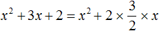
Теперь второй член представлен в виде удвоенного произведения первого выражения и второго. Переменная a, как было сказано ранее, равна x. А переменная b равна дроби 
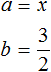
Возвращаемся к нашему примеру и прибавляем квадрат второго выражения, и чтобы значение выражения не изменилось, сразу же вычитаем его:
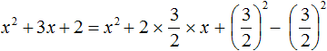
Прибавляем оставшийся член 2
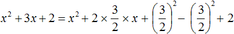
Свернём полный квадрат:
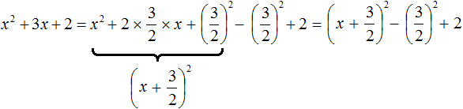
Оставшийся квадрат второго выражения и число 2 можно сложить. В итоге получим:
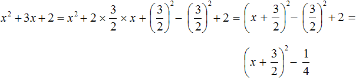
Пример 6. Выполним выделение полного квадрата из квадратного трёхчлена 9x2 + 18x + 7
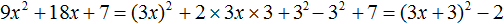
Пример 7. Выполним выделение полного квадрата из квадратного трёхчлена x2 − 10x + 1
В данном трёхчлене первые два члена связаны знаком «минус». В этом случае как и раньше нужно выделить полный квадрат, но это будет квадрат разности. Проще говоря, нужно построить выражение вида a2 − 2ab + b2.
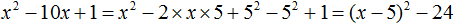
Пример 8. Выполним выделение полного квадрата из квадратного трёхчлена 16x2 + 4x + 1
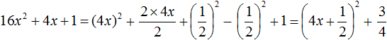
Пример 9. Разложить многочлен x2 + 6x + 8 на множители при помощи выделения полного квадрата.
Сначала выделим полный квадрат:
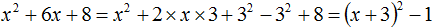
Получившийся многочлен (x + 3)2 − 1 является разностью квадратов, поскольку единица может быть представлена в виде 12. Воспользуемся формулой разности квадратов и разложим многочлен (x + 3)2 − 1 на множители:
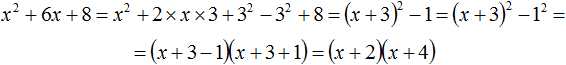
Задания для самостоятельного решения
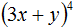
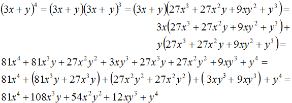
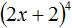
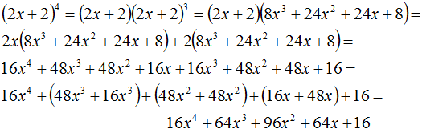
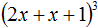
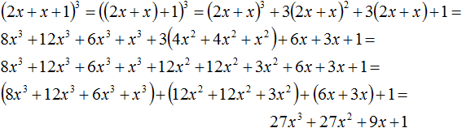
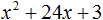
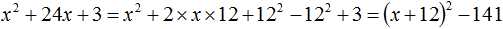
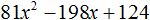
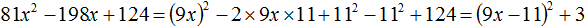
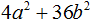
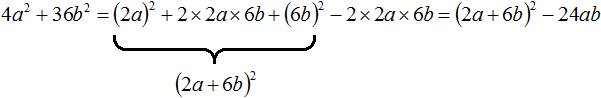
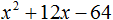
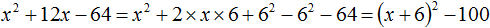
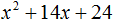
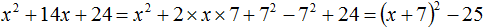
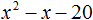
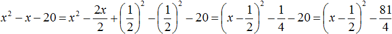
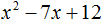
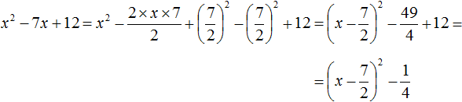